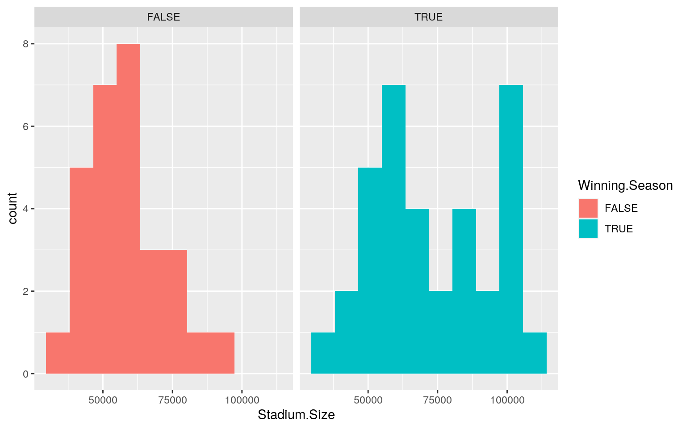
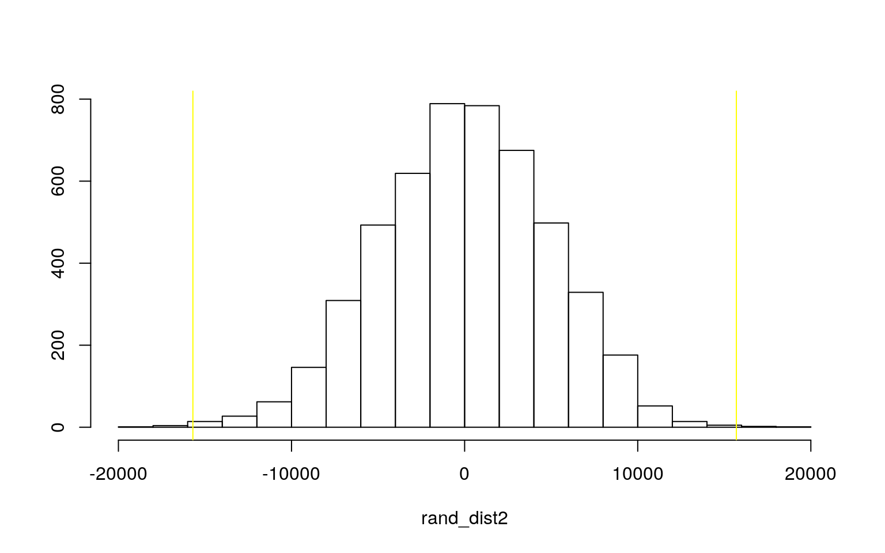
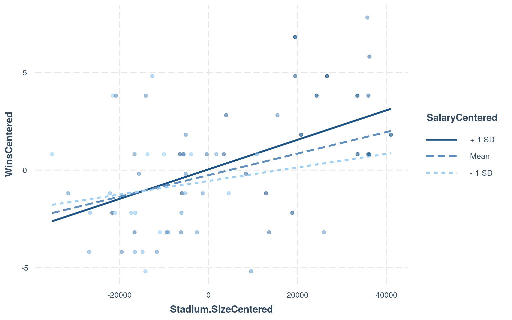
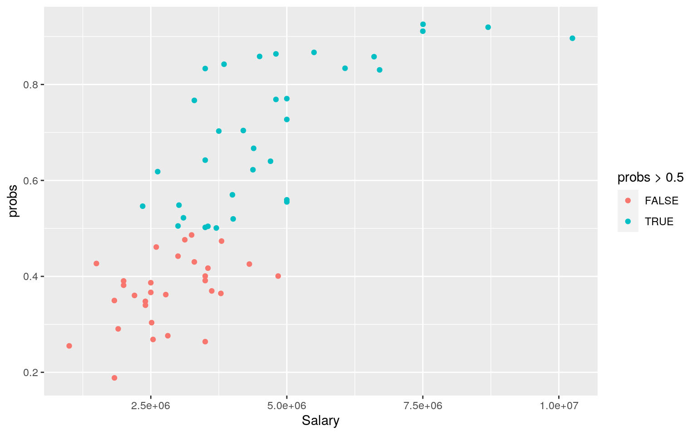
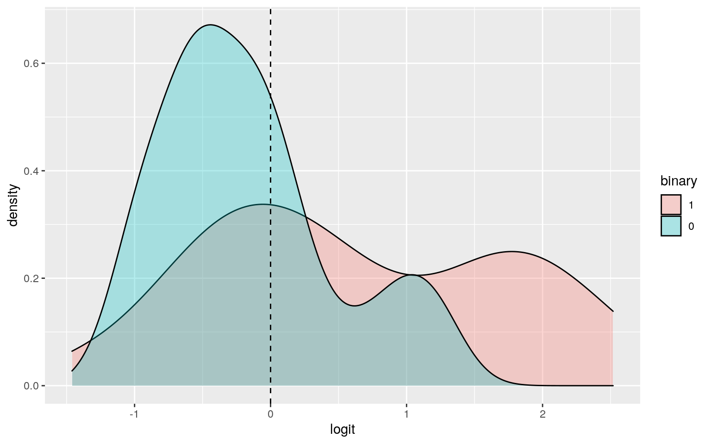
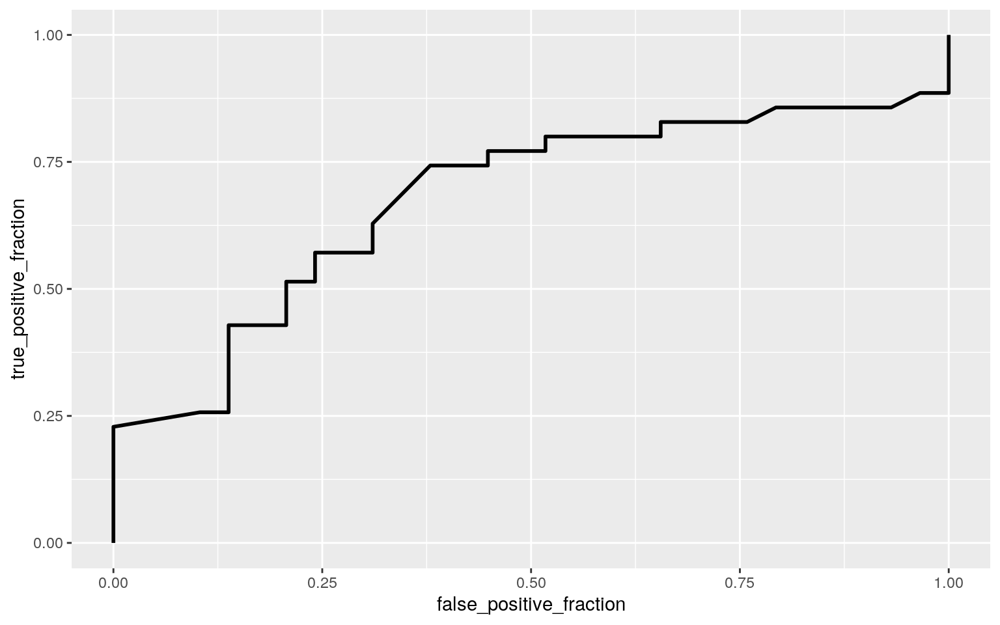

The dataset, CFB2019, contains several categorical and numeric variables about the 2019 college football season. The dataset lists the name of each school and conference. The number of wins and losses for each school is listed as well as if the school had a winning season or not, meaning they had more wins than losses. This dataset also has the size of the stadium because I wanted to see if the potential to have more fans at games had any correlation on the number of wins a team had. I chose this dataset because I am a huge fan of college football and love looking at statistics about it.
CFB2019 <- read_csv("CFB2019.csv")
head(CFB2019)## # A tibble: 6 x 7
## School Conference Salary Stadium.Size Wins Losses
Winning.Season
## <chr> <chr> <dbl> <dbl> <dbl> <dbl> <lgl>
## 1 Clemson ACC 10250000 86092 14 1 TRUE
## 2 Louisville ACC 3250000 61000 8 5 TRUE
## 3 Wake Forest ACC 1831580 31500 8 5 TRUE
## 4 Boston College ACC 2514859 44500 6 7 FALSE
## 5 Florida State ACC 5000000 79560 6 7 FALSE
## 6 Syracuse ACC 2401206 49262 5 7 FALSEPerform a MANOVA testing whether any of your numeric variables (or a subset of them, if including them all is unreasonable or doesn’t make sense) show a mean difference across levels of one of your categorical variables (3). If they do, perform univariate ANOVAs to find response(s) showing a mean difference across groups (3), and perform post-hoc t tests to find which groups differ (3). Discuss the number of tests you have performed, calculate the probability of at least one type I error (if unadjusted), and adjust the significance level accordingly (bonferroni correction) before discussing significant differences (3). Briefly discuss some of the MANOVA assumptions and whether or not they are likely to have been met here (no need for anything too in-depth) (2).
manova1 <- manova(cbind(Stadium.Size,Salary,Wins,Losses)~Winning.Season,data=CFB2019)
summary(manova1) ## Df Pillai approx F num Df den Df Pr(>F)
## Winning.Season 1 0.68225 31.67 4 59 4.33e-14 ***
## Residuals 62
## ---
## Signif. codes: 0 '***' 0.001 '**' 0.01 '*' 0.05 '.' 0.1
' ' 1summary.aov(manova1) ## Response Stadium.Size :
## Df Sum Sq Mean Sq F value Pr(>F)
## Winning.Season 1 3.9080e+09 3908007291 11.708 0.001107
**
## Residuals 62 2.0695e+10 333791309
## ---
## Signif. codes: 0 '***' 0.001 '**' 0.01 '*' 0.05 '.' 0.1
' ' 1
##
## Response Salary :
## Df Sum Sq Mean Sq F value Pr(>F)
## Winning.Season 1 1.8350e+13 1.8350e+13 6.8697 0.01101 *
## Residuals 62 1.6562e+14 2.6712e+12
## ---
## Signif. codes: 0 '***' 0.001 '**' 0.01 '*' 0.05 '.' 0.1
' ' 1
##
## Response Wins :
## Df Sum Sq Mean Sq F value Pr(>F)
## Winning.Season 1 407.97 407.97 131.89 < 2.2e-16 ***
## Residuals 62 191.78 3.09
## ---
## Signif. codes: 0 '***' 0.001 '**' 0.01 '*' 0.05 '.' 0.1
' ' 1
##
## Response Losses :
## Df Sum Sq Mean Sq F value Pr(>F)
## Winning.Season 1 245.69 245.690 125.84 < 2.2e-16 ***
## Residuals 62 121.04 1.952
## ---
## Signif. codes: 0 '***' 0.001 '**' 0.01 '*' 0.05 '.' 0.1
' ' 1CFB2019 %>% group_by(Winning.Season) %>% summarize(mean(Stadium.Size),mean(Salary),mean(Wins),mean(Losses))## # A tibble: 2 x 5
## Winning.Season `mean(Stadium.Size)` `mean(Salary)`
`mean(Wins)` `mean(Losses)`
## <lgl> <dbl> <dbl> <dbl> <dbl>
## 1 FALSE 58070. 3251570. 4.41 7.79
## 2 TRUE 73768. 4327244. 9.49 3.86pairwise.t.test(CFB2019$Stadium.Size,CFB2019$Winning.Season, p.adj="none")##
## Pairwise comparisons using t tests with pooled SD
##
## data: CFB2019$Stadium.Size and CFB2019$Winning.Season
##
## FALSE
## TRUE 0.0011
##
## P value adjustment method: nonepairwise.t.test(CFB2019$Salary,CFB2019$Winning.Season, p.adj="none")##
## Pairwise comparisons using t tests with pooled SD
##
## data: CFB2019$Salary and CFB2019$Winning.Season
##
## FALSE
## TRUE 0.011
##
## P value adjustment method: nonepairwise.t.test(CFB2019$Wins,CFB2019$Winning.Season, p.adj="none")##
## Pairwise comparisons using t tests with pooled SD
##
## data: CFB2019$Wins and CFB2019$Winning.Season
##
## FALSE
## TRUE <2e-16
##
## P value adjustment method: nonepairwise.t.test(CFB2019$Losses,CFB2019$Winning.Season, p.adj="none")##
## Pairwise comparisons using t tests with pooled SD
##
## data: CFB2019$Losses and CFB2019$Winning.Season
##
## FALSE
## TRUE <2e-16
##
## P value adjustment method: none# Bonferroni
0.05/9## [1] 0.005555556# Type 1 error
1-(0.95^9)## [1] 0.3697506The manova tested whether or not the numeric variables: stadium size, coach’s salary, number of wins, and number of losses had an effect on whether or not that particular school had a winning or losing football season. The manova test had a significant result, rejecting the null that for each response variable, the means of all groups are equal. The alternative hypothesis of for at least 1 response variable, at least 1 group mean differs was met. An anova test was then performed for each variable and showed that all four variables had a significant effect on whether or not the team had a winning season or not. The two categories for those with a winning season and those without one varied in all four numeric variables to each other. 1 manova, 4 anovas, and 4 t tests were performed, totaling 9 tests. Some MANOVA assumptions are: random samples, multivariate normality of DVs, homogeneity of within-group covariance matricies, linear relationships among DVs, no extreme outliers, no multicollinearity. There were no extreme outliers in that each team played near the same number of games.
#2 Perform some kind of randomization test on your data (that makes sense). The statistic can be anything you want (mean difference, correlation, F-statistic/ANOVA, chi-squared), etc. State null and alternative hypotheses, perform the test, and interpret the results (7). Create a plot visualizing the null distribution and the test statistic (3).
ggplot(CFB2019, aes(Stadium.Size,fill=Winning.Season)) + geom_histogram(bins = 10) + facet_wrap(~Winning.Season, ncol=2)
CFB2019 %>% group_by(Winning.Season) %>% summarize(means=mean(Stadium.Size)) %>% summarize('mean_diff'=diff(means)) ## # A tibble: 1 x 1
## mean_diff
## <dbl>
## 1 15698.rand_dist2 <- vector()
for(i in 1:5000){
new <- data.frame(Stadium.Size=sample(CFB2019$Stadium.Size),Winning.Season=CFB2019$Winning.Season)
rand_dist2[i] <- mean(new[new$Winning.Season=="TRUE",]$Stadium.Size)-mean(new[new$Winning.Season=="FALSE",]$Stadium.Size)
}
{hist(rand_dist2,main="",ylab="");abline(v=c(-15697.65,15697.65),col="yellow")}
mean(rand_dist2 > 15697.65 | rand_dist2 < -15697.65)## [1] 0.0016t.test(data=CFB2019,Stadium.Size~Winning.Season)##
## Welch Two Sample t-test
##
## data: Stadium.Size by Winning.Season
## t = -3.5445, df = 59.827, p-value = 0.0007706
## alternative hypothesis: true difference in means is not
equal to 0
## 95 percent confidence interval:
## -24556.925 -6838.376
## sample estimates:
## mean in group FALSE mean in group TRUE
## 58070.21 73767.86The null hypothesis for this part would be that there is no mean difference in the size of the stadium the team plays on with the number of wins that team has, and therefore, whether or not they had a winning season. After testing, it was concluded that the null hypothesis was rejected, and that there is a mean difference of 15,697.65 in stadium size between teams that had a winning season and teams that did not. Schools with a winning season had larger stadiums than schools with a smaller stadium.
A. Build a linear regression model predicting one of your response variables from at least 2 other variables, including their interaction. Mean-center any numeric variables involved in the interaction.
B. Interpret the coefficient estimates (do not discuss significance)
C. Plot the regression using ggplot() using geom_smooth(method=“lm”). If your interaction is numeric by numeric, refer to code in the slides to make the plot or check out the interactions package, which makes this easier. If you have 3 or more predictors, just chose two of them to plot for convenience. (10)
D. What proportion of the variation in the outcome does your model explain? (4)
E. Check assumptions of linearity, normality, and homoskedasticity either graphically or using a hypothesis test (5)
F. Regardless, recompute regression results with robust standard errors via coeftest(..., vcov=vcovHC(...)). Discuss significance of results, including any changes from before/after robust SEs if applicable. (10)
CFB2019$Stadium.SizeCentered <- CFB2019$Stadium.Size - mean(CFB2019$Stadium.Size, na.rm = T)
CFB2019$SalaryCentered <- CFB2019$Salary - mean(CFB2019$Salary, na.rm = T)
CFB2019$WinsCentered <- CFB2019$Wins - mean(CFB2019$Wins, na.rm = T)
library(interactions)
fit3 <- lm(WinsCentered ~ Stadium.SizeCentered * SalaryCentered, data=CFB2019)
interact_plot(fit3,Stadium.SizeCentered,SalaryCentered,plot.points = T)
summary(fit3)##
## Call:
## lm(formula = WinsCentered ~ Stadium.SizeCentered *
SalaryCentered,
## data = CFB2019)
##
## Residuals:
## Min 1Q Median 3Q Max
## -5.3595 -2.2766 -0.5205 1.7010 6.3053
##
## Coefficients:
## Estimate Std. Error t value Pr(>|t|)
## (Intercept) -2.574e-01 4.212e-01 -0.611 0.5435
## Stadium.SizeCentered 5.521e-05 2.283e-05 2.418 0.0187 *
## SalaryCentered 1.747e-07 3.085e-07 0.566 0.5732
## Stadium.SizeCentered:SalaryCentered 1.197e-11 1.150e-11
1.041 0.3021
## ---
## Signif. codes: 0 '***' 0.001 '**' 0.01 '*' 0.05 '.' 0.1
' ' 1
##
## Residual standard error: 2.728 on 60 degrees of freedom
## Multiple R-squared: 0.2552, Adjusted R-squared: 0.218
## F-statistic: 6.854 on 3 and 60 DF, p-value: 0.0004782library(sandwich)
library(lmtest)
bptest(fit3)##
## studentized Breusch-Pagan test
##
## data: fit3
## BP = 2.6072, df = 3, p-value = 0.4562resids <- fit3$residuals
shapiro.test(resids)##
## Shapiro-Wilk normality test
##
## data: resids
## W = 0.97695, p-value = 0.2743coeftest(fit3, vcov = vcovHC(fit3))##
## t test of coefficients:
##
## Estimate Std. Error t value Pr(>|t|)
## (Intercept) -2.5737e-01 4.3895e-01 -0.5863 0.5599
## Stadium.SizeCentered 5.5207e-05 2.9815e-05 1.8517 0.0690
.
## SalaryCentered 1.7473e-07 3.8619e-07 0.4524 0.6526
## Stadium.SizeCentered:SalaryCentered 1.1966e-11
1.3465e-11 0.8886 0.3777
## ---
## Signif. codes: 0 '***' 0.001 '**' 0.01 '*' 0.05 '.' 0.1
' ' 1The response variable, Wins, was predicted from the interaction between stadium size for teams and how much their head coach was paid. The coefficient for each centered numeric variable is shown. From the plot it is apparent that the stadium size is more important for the number of wins a team has each season if the coach is paid more because it has a steeper slope above the mean. The p-value for the Shapiro-Wilk test of 0.2743 is greater than 0.05, meaning the distribution is normal, so normality and linearity assumptions are met, and the data was homoskedastistic.
Rerun same regression model (with the interaction), but this time compute bootstrapped standard errors (either by resampling observations or residuals). Discuss any changes you observe in SEs and p-values using these SEs compared to the original SEs and the robust SEs)
dat <- CFB2019
boot_dat <- sample_frac(dat,replace=T)
fit4 <- lm(WinsCentered ~ Stadium.SizeCentered * SalaryCentered, data=boot_dat)
samp_distn <-replicate(5000, {
boot_dat<-sample_frac(dat,replace=T)
fit4 <-lm(WinsCentered ~ Stadium.SizeCentered * SalaryCentered, data=boot_dat)
coef(fit4)
})
summary(fit4)##
## Call:
## lm(formula = WinsCentered ~ Stadium.SizeCentered *
SalaryCentered,
## data = boot_dat)
##
## Residuals:
## Min 1Q Median 3Q Max
## -5.6720 -2.4587 -0.0964 2.2510 5.5294
##
## Coefficients:
## Estimate Std. Error t value Pr(>|t|)
## (Intercept) -2.773e-01 4.402e-01 -0.630 0.5312
## Stadium.SizeCentered 8.007e-05 3.215e-05 2.491 0.0155 *
## SalaryCentered -1.783e-07 3.552e-07 -0.502 0.6175
## Stadium.SizeCentered:SalaryCentered 1.974e-11 1.363e-11
1.448 0.1527
## ---
## Signif. codes: 0 '***' 0.001 '**' 0.01 '*' 0.05 '.' 0.1
' ' 1
##
## Residual standard error: 2.811 on 60 degrees of freedom
## Multiple R-squared: 0.2457, Adjusted R-squared: 0.208
## F-statistic: 6.515 on 3 and 60 DF, p-value: 0.0006885samp_distn %>% t %>% as.data.frame %>% summarize_all(sd)## (Intercept) Stadium.SizeCentered SalaryCentered
Stadium.SizeCentered:SalaryCentered
## 1 0.4207525 2.767016e-05 3.436891e-07 1.276995e-11Compared to the regression model in part 3, the standard error decreases from 2.728 to 0.4167. The p-value in part 3 was 0.004782, and the p-value in this part was 0.0009579, indicating a decrease in p-value, therefore a higher significance.
#5 A. Fit a logistic regression model predicting a binary variable (if you don’t have one, make/get one) from at least two explanatory variables (interaction not necessary). # notes on HW8 Question 2 B. Interpret coefficient estimates in context (10) C. Report a confusion matrix for your logistic regression (5) D. Compute and discuss the Accuracy, Sensitivity (TPR), Specificity (TNR), Precision (PPV), and AUC of your model (5) E. Using ggplot, make a density plot of the log-odds (logit) colored/grouped by your binary outcome variable (5) F. Generate an ROC curve (plot) and calculate AUC (either manually or with a package); interpret (5)
class_diag<-function(probs,truth){
tab<-table(factor(probs>.5,levels=c("FALSE","TRUE")),truth)
acc=sum(diag(tab))/sum(tab)
sens=tab[2,2]/colSums(tab)[2]
spec=tab[1,1]/colSums(tab)[1]
ppv=tab[2,2]/rowSums(tab)[2]
if(is.numeric(truth)==FALSE & is.logical(truth)==FALSE) truth<-as.numeric(truth)-1
#CALCULATE EXACT AUC
ord<-order(probs, decreasing=TRUE)
probs <- probs[ord]; truth <- truth[ord]
TPR=cumsum(truth)/max(1,sum(truth))
FPR=cumsum(!truth)/max(1,sum(!truth))
dup<-c(probs[-1]>=probs[-length(probs)], FALSE)
TPR<-c(0,TPR[!dup],1); FPR<-c(0,FPR[!dup],1)
n <- length(TPR)
auc<- sum( ((TPR[-1]+TPR[-n])/2) * (FPR[-1]-FPR[-n]) )
data.frame(acc,sens,spec,ppv,auc)
}library(tidyverse)
library(lmtest)
Pt5CFB2019 <- CFB2019 %>% mutate(binary=ifelse(Winning.Season=="TRUE",1,0))
head(Pt5CFB2019)## # A tibble: 6 x 11
## School Conference Salary Stadium.Size Wins Losses
Winning.Season Stadium.SizeCen… SalaryCentered
## <chr> <chr> <dbl> <dbl> <dbl> <dbl> <lgl> <dbl> <dbl>
## 1 Clems… ACC 1.02e7 86092 14 1 TRUE 19437. 6410171.
## 2 Louis… ACC 3.25e6 61000 8 5 TRUE -5655. -589829.
## 3 Wake … ACC 1.83e6 31500 8 5 TRUE -35155. -2008249.
## 4 Bosto… ACC 2.51e6 44500 6 7 FALSE -22155. -1324970.
## 5 Flori… ACC 5.00e6 79560 6 7 FALSE 12905. 1160171.
## 6 Syrac… ACC 2.40e6 49262 5 7 FALSE -17393. -1438623.
## # … with 2 more variables: WinsCentered <dbl>, binary
<dbl>fit5 <- glm(binary~Salary+Stadium.Size,data=Pt5CFB2019,family="binomial")
summary(fit5)##
## Call:
## glm(formula = binary ~ Salary + Stadium.Size, family =
"binomial",
## data = Pt5CFB2019)
##
## Deviance Residuals:
## Min 1Q Median 3Q Max
## -1.7157 -1.0221 0.4496 1.0664 1.8270
##
## Coefficients:
## Estimate Std. Error z value Pr(>|z|)
## (Intercept) -3.017e+00 1.083e+00 -2.786 0.00534 **
## Salary 1.755e-07 2.467e-07 0.712 0.47670
## Stadium.Size 3.920e-05 2.006e-05 1.955 0.05063 .
## ---
## Signif. codes: 0 '***' 0.001 '**' 0.01 '*' 0.05 '.' 0.1
' ' 1
##
## (Dispersion parameter for binomial family taken to be 1)
##
## Null deviance: 88.16 on 63 degrees of freedom
## Residual deviance: 76.58 on 61 degrees of freedom
## AIC: 82.58
##
## Number of Fisher Scoring iterations: 4exp(coef(fit5)%>%round(3))## (Intercept) Salary Stadium.Size
## 0.04894784 1.00000000 1.00000000Pt5CFB2019$probs <- predict(fit5, type="response")
ggplot(Pt5CFB2019, aes(Salary,probs,color=probs > 0.5)) + geom_point()
prob5 <- predict(fit5,type="response")
class_diag(prob5, Pt5CFB2019$binary)## acc sens spec ppv auc
## 1 0.671875 0.6857143 0.6551724 0.7058824 0.7280788table(predict=as.numeric(prob5>0.5),truth=Pt5CFB2019$binary) %>% addmargins## truth
## predict 0 1 Sum
## 0 19 11 30
## 1 10 24 34
## Sum 29 35 64 # Sensitivity
24/35## [1] 0.6857143 # Specificity
19/29## [1] 0.6551724 # Precision
24/34## [1] 0.7058824Pt5CFB2019$logit<-predict(fit5,type="link")
Pt5CFB2019$binary<-factor(Pt5CFB2019$binary,levels=c("1","0"))
ggplot(Pt5CFB2019,aes(logit, fill=binary))+geom_density(alpha=.3)+
geom_vline(xintercept=0,lty=2)
library(plotROC)
ROCplot <- ggplot(fit5) + geom_roc(aes(d=binary,m=Salary), n.cuts=0)
ROCplot
calc_auc(ROCplot)## PANEL group AUC
## 1 1 -1 0.6763547For this part, the binary variable created was based off of whether not the school had a winning season. Those that did are labeled with 1 and the color red. Those that had a losing season are labeled 0 and the color blue. The auc was 0.6763547, which is not the best value since it is further from 1.
A. Perform a logistic regression predicting the same binary response variable from ALL of the rest of your variables (the more, the better!)
B. Fit model, compute in-sample classification diagnostics (Accuracy, Sensitivity, Specificity, Precision, AUC), and interpret (5)
C. Perform 10-fold (or repeated random sub-sampling) CV with the same model and report average out-of-sample classification diagnostics (Accuracy, Sensitivity, Specificity, Precision, and AUC); interpret AUC and compare with the in-sample metrics (10)
D. Perform LASSO on the same model/variables. Choose lambda to give the simplest model whose accuracy is near that of the best (i.e., lambda.1se). Discuss which variables are retained. (5)
E. Perform 10-fold CV using only the variables lasso selected: compare model’s out-of-sample AUC to that of your logistic regressions above (5)
Pt6CFB2019 <- Pt5CFB2019 %>% select(-probs,-School,-logit,-Wins,-Losses,-Winning.Season,-WinsCentered)
fit6 <- glm(binary~(.) , data=Pt6CFB2019, family="binomial")
coeftest(fit6)##
## z test of coefficients:
##
## Estimate Std. Error z value Pr(>|z|)
## (Intercept) 3.6295e+00 1.2885e+00 2.8170 0.004848 **
## ConferenceBig 10 3.4922e-01 8.6768e-01 0.4025 0.687332
## ConferenceBig 12 -3.0279e-01 9.1340e-01 -0.3315 0.740264
## ConferencePac-12 -1.5308e-01 8.5757e-01 -0.1785 0.858331
## ConferenceSEC 1.0437e+00 9.6511e-01 1.0815 0.279480
## Salary -1.7883e-07 2.5657e-07 -0.6970 0.485792
## Stadium.Size -5.1769e-05 2.3105e-05 -2.2406 0.025053 *
## Stadium.SizeCentered NA NA NA NA
## SalaryCentered NA NA NA NA
## ---
## Signif. codes: 0 '***' 0.001 '**' 0.01 '*' 0.05 '.' 0.1
' ' 1exp(coef(fit6)) %>% round(3)## (Intercept) ConferenceBig 10 ConferenceBig 12
ConferencePac-12
## 37.696 1.418 0.739 0.858
## ConferenceSEC Salary Stadium.Size Stadium.SizeCentered
## 2.840 1.000 1.000 NA
## SalaryCentered
## NAprob6 <- predict(fit6,type="response")
class_diag(prob6, Pt6CFB2019$binary)## acc sens spec ppv auc
## 0 0.71875 0.7241379 0.7142857 0.6774194 0.7605911library(glmnet)
k=10
set.seed(1234)
data <- Pt6CFB2019[sample(nrow(Pt6CFB2019)),]
folds <- cut(seq(1:nrow(Pt5CFB2019)),breaks=k,labels=F)
diags <- NULL
for(i in 1:k){
train <- data[folds!=i,]
test <- data[folds==i,]
truth <- test$binary
fit6 <- glm(binary~(.), data=Pt6CFB2019, family="binomial")
prob6 <- predict(fit6,newdata=test, type="response")
diags <- rbind(diags, class_diag(prob6, truth))
}
diags %>% summarize_all(mean)## acc sens spec ppv auc
## 1 0.7238095 0.785 0.7516667 0.7166667 0.7605556model.matrix(fit6)[,-1]## ConferenceBig 10 ConferenceBig 12 ConferencePac-12
ConferenceSEC Salary Stadium.Size
## 1 0 0 0 0 10250000 86092
## 2 0 0 0 0 3250000 61000
## 3 0 0 0 0 1831580 31500
## 4 0 0 0 0 2514859 44500
## 5 0 0 0 0 5000000 79560
## 6 0 0 0 0 2401206 49262
## 7 0 0 0 0 3000000 57583
## 8 0 0 0 0 3100000 65326
## 9 0 0 0 0 3550000 61500
## 10 0 0 0 0 4000000 66233
## 11 0 0 0 0 3017718 68400
## 12 0 0 0 0 3500000 51000
## 13 0 0 0 0 2540928 40004
## 14 0 0 0 0 3300000 55000
## 15 0 1 0 0 4800000 86112
## 16 0 1 0 0 1000000 45140
## 17 0 1 0 0 3500000 50000
## 18 0 1 0 0 5000000 60218
## 19 0 1 0 0 5500000 100119
## 20 0 1 0 0 3500000 61500
## 21 0 1 0 0 4840717 45000
## 22 0 1 0 0 3125000 60540
## 23 0 1 0 0 3703975 60454
## 24 0 1 0 0 2775000 50071
## 25 1 0 0 0 4500000 102780
## 26 1 0 0 0 4800000 102572
## 27 1 0 0 0 7504000 107601
## 28 1 0 0 0 1830000 52929
## 29 1 0 0 0 4390000 75005
## 30 1 0 0 0 2500000 51802
## 31 1 0 0 0 2200000 52454
## 32 1 0 0 0 3550000 52525
## 33 1 0 0 0 3750000 82123
## 34 1 0 0 0 4700000 70585
## 35 1 0 0 0 5000000 60670
## 36 1 0 0 0 5000000 85458
## 37 1 0 0 0 3800000 57236
## 38 1 0 0 0 3619775 47130
## 39 0 0 0 1 6603600 93246
## 40 0 0 0 1 6070000 90916
## 41 0 0 0 1 3846000 102455
## 42 0 0 0 1 4013600 61000
## 43 0 0 0 1 2350000 71168
## 44 0 0 0 1 4200000 80250
## 45 0 0 0 1 2812523 39790
## 46 0 0 0 1 3500000 102321
## 47 0 0 0 1 8700000 100077
## 48 0 0 0 1 6705656 87451
## 49 0 0 0 1 7500000 102733
## 50 0 0 0 1 2600000 61337
## 51 0 0 0 1 3000000 64038
## 52 0 0 0 1 3500000 76212
## 53 0 0 1 0 2500000 54000
## 54 0 0 1 0 1500000 62717
## 55 0 0 1 0 4377500 70083
## 56 0 0 1 0 1900008 45674
## 57 0 0 1 0 3500000 35117
## 58 0 0 1 0 4311543 50000
## 59 0 0 1 0 3787917 45807
## 60 0 0 1 0 2625965 77501
## 61 0 0 1 0 2000000 56634
## 62 0 0 1 0 3300000 92542
## 63 0 0 1 0 2400000 50183
## 64 0 0 1 0 2000000 55675
## Stadium.SizeCentered SalaryCentered
## 1 19437.1406 6410170.781
## 2 -5654.8594 -589829.219
## 3 -35154.8594 -2008249.219
## 4 -22154.8594 -1324970.219
## 5 12905.1406 1160170.781
## 6 -17392.8594 -1438623.219
## 7 -9071.8594 -839829.219
## 8 -1328.8594 -739829.219
## 9 -5154.8594 -289829.219
## 10 -421.8594 160170.781
## 11 1745.1406 -822111.219
## 12 -15654.8594 -339829.219
## 13 -26650.8594 -1298901.219
## 14 -11654.8594 -539829.219
## 15 19457.1406 960170.781
## 16 -21514.8594 -2839829.219
## 17 -16654.8594 -339829.219
## 18 -6436.8594 1160170.781
## 19 33464.1406 1660170.781
## 20 -5154.8594 -339829.219
## 21 -21654.8594 1000887.781
## 22 -6114.8594 -714829.219
## 23 -6200.8594 -135854.219
## 24 -16583.8594 -1064829.219
## 25 36125.1406 660170.781
## 26 35917.1406 960170.781
## 27 40946.1406 3664170.781
## 28 -13725.8594 -2009829.219
## 29 8350.1406 550170.781
## 30 -14852.8594 -1339829.219
## 31 -14200.8594 -1639829.219
## 32 -14129.8594 -289829.219
## 33 15468.1406 -89829.219
## 34 3930.1406 860170.781
## 35 -5984.8594 1160170.781
## 36 18803.1406 1160170.781
## 37 -9418.8594 -39829.219
## 38 -19524.8594 -220054.219
## 39 26591.1406 2763770.781
## 40 24261.1406 2230170.781
## 41 35800.1406 6170.781
## 42 -5654.8594 173770.781
## 43 4513.1406 -1489829.219
## 44 13595.1406 360170.781
## 45 -26864.8594 -1027306.219
## 46 35666.1406 -339829.219
## 47 33422.1406 4860170.781
## 48 20796.1406 2865826.781
## 49 36078.1406 3660170.781
## 50 -5317.8594 -1239829.219
## 51 -2616.8594 -839829.219
## 52 9557.1406 -339829.219
## 53 -12654.8594 -1339829.219
## 54 -3937.8594 -2339829.219
## 55 3428.1406 537670.781
## 56 -20980.8594 -1939821.219
## 57 -31537.8594 -339829.219
## 58 -16654.8594 471713.781
## 59 -20847.8594 -51912.219
## 60 10846.1406 -1213864.219
## 61 -10020.8594 -1839829.219
## 62 25887.1406 -539829.219
## 63 -16471.8594 -1439829.219
## 64 -10979.8594 -1839829.219y<-as.matrix(Pt6CFB2019$binary)
x<-model.matrix(binary~.,data=Pt6CFB2019)[,-1]
head(x)## ConferenceBig 10 ConferenceBig 12 ConferencePac-12
ConferenceSEC Salary Stadium.Size
## 1 0 0 0 0 10250000 86092
## 2 0 0 0 0 3250000 61000
## 3 0 0 0 0 1831580 31500
## 4 0 0 0 0 2514859 44500
## 5 0 0 0 0 5000000 79560
## 6 0 0 0 0 2401206 49262
## Stadium.SizeCentered SalaryCentered
## 1 19437.141 6410170.8
## 2 -5654.859 -589829.2
## 3 -35154.859 -2008249.2
## 4 -22154.859 -1324970.2
## 5 12905.141 1160170.8
## 6 -17392.859 -1438623.2x<-scale(x)
library(glmnet)
cv6<-cv.glmnet(x,y,family="binomial")
lasso6<-glmnet(x,y,family="binomial",lambda=cv6$lambda.1se)
coef(lasso6)## 9 x 1 sparse Matrix of class "dgCMatrix"
## s0
## (Intercept) 1.917095e-01
## ConferenceBig 10 .
## ConferenceBig 12 .
## ConferencePac-12 .
## ConferenceSEC .
## Salary .
## Stadium.Size 2.552810e-01
## Stadium.SizeCentered 1.182898e-16
## SalaryCentered .library(glmnet)
k=10
set.seed(1234)
data <- Pt5CFB2019[sample(nrow(Pt6CFB2019)),]
folds <- cut(seq(1:nrow(Pt6CFB2019)),breaks=k,labels=F)
diagslasso <- NULL
for(i in 1:k){
train <- data[folds!=i,]
test <- data[folds==i,]
truth <- test$binary
fit6lasso <- glm(binary~ Stadium.Size, data=Pt6CFB2019, family="binomial")
prob6lasso <- predict(fit6lasso,newdata=test, type="response")
diagslasso <- rbind(diagslasso, class_diag(prob6lasso, truth))
}
diagslasso %>% summarize_all(mean)## acc sens spec ppv auc
## 1 0.6761905 0.7833333 0.6983333 NaN 0.7844444From running the regression, it was found that the only variable that had a significant effect on the binary variable was the size of the stadium. The initial auc was 0.7605911. Next, the 10-fold CV was performed, and the auc remained nearly identical with 0.7605556. This value was only slightly lower than the in in-sample metrics. Next, a lasso was performed to determine which variables had significant effects. Only stadium size was retained. Stadium size was then used in another 10 fold CV. The auc for that was 0.7844, which was an increase from both prior values.